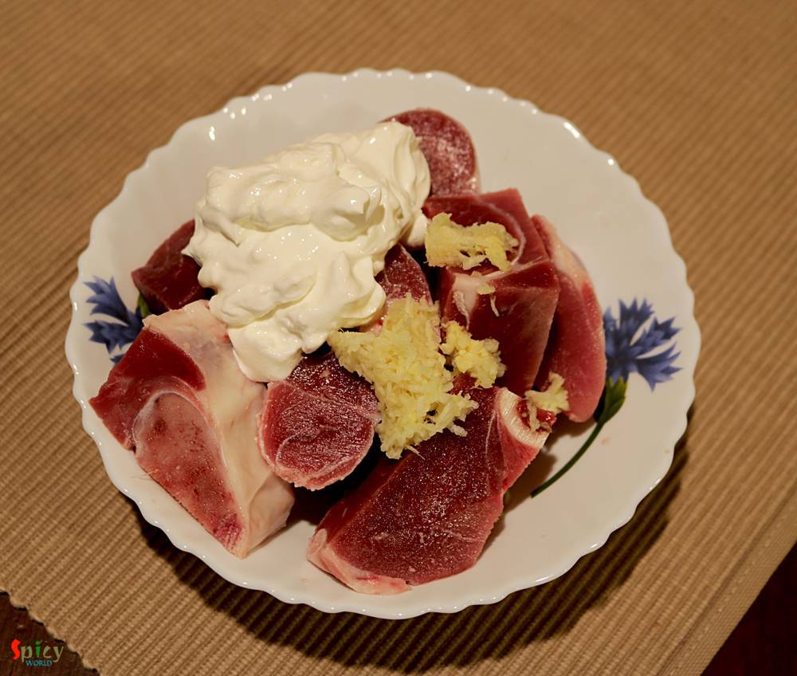
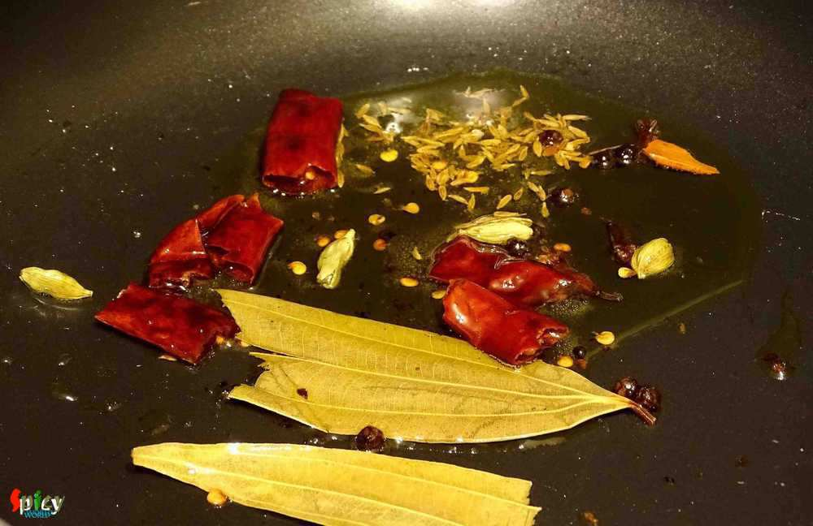
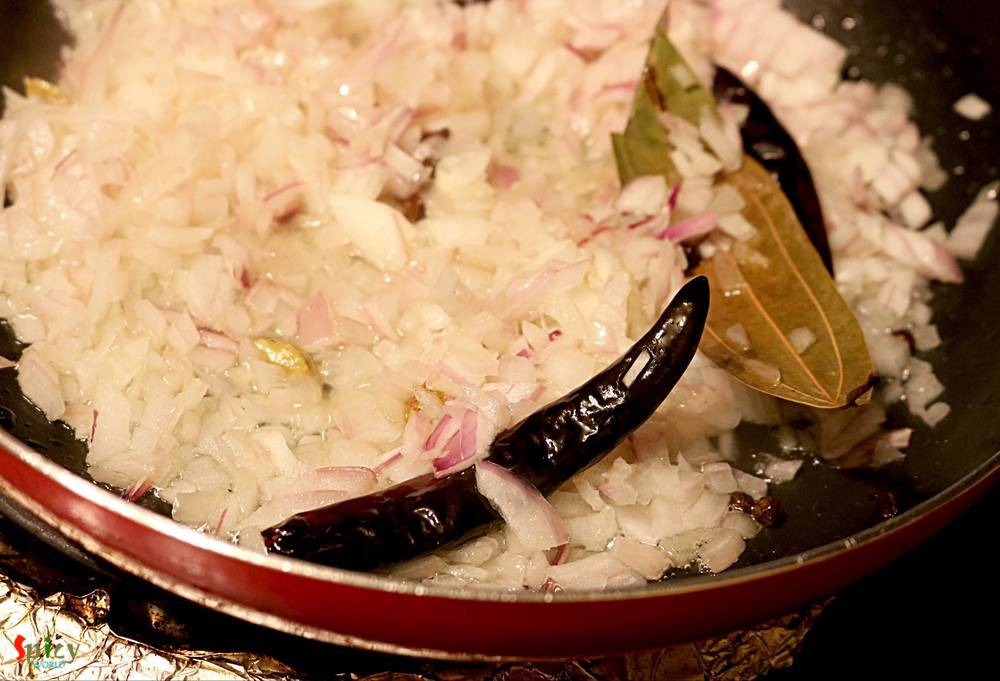
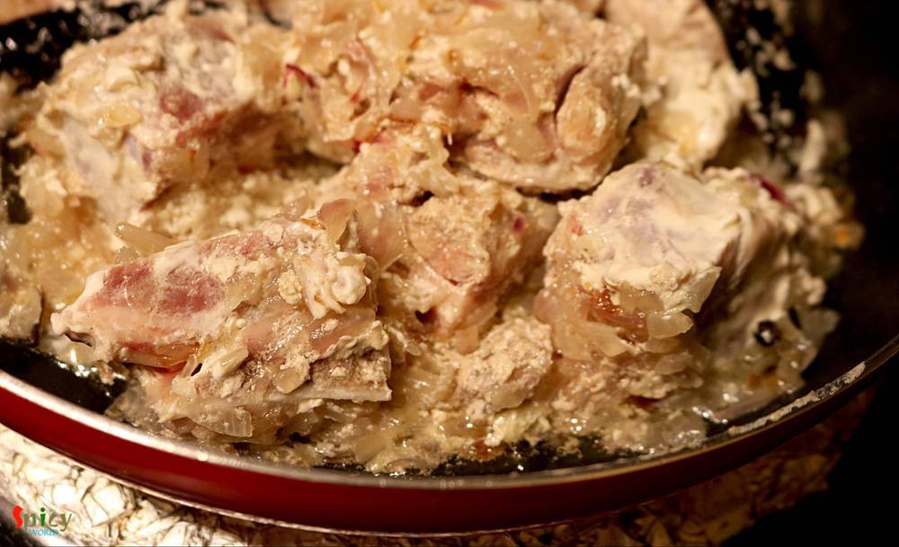
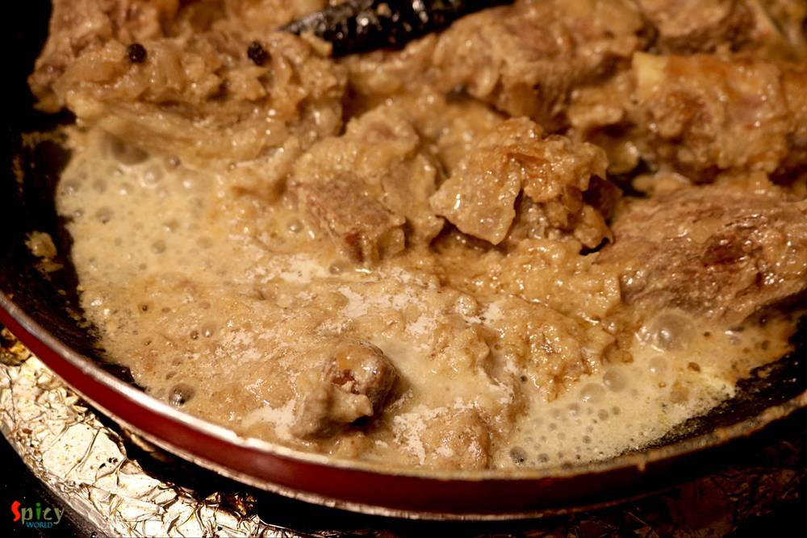
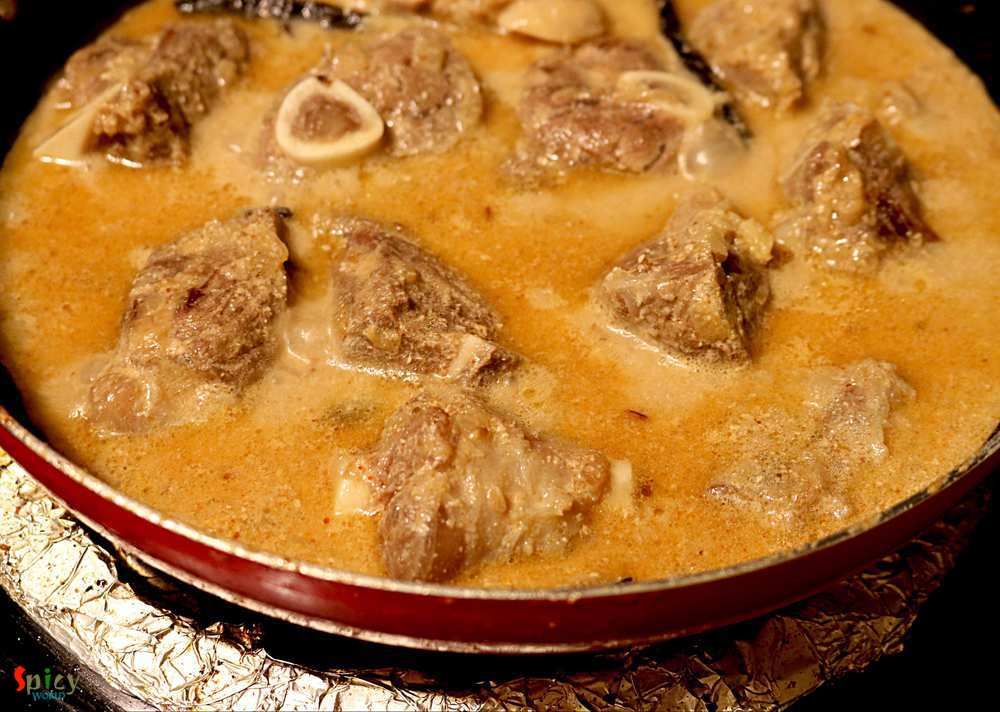
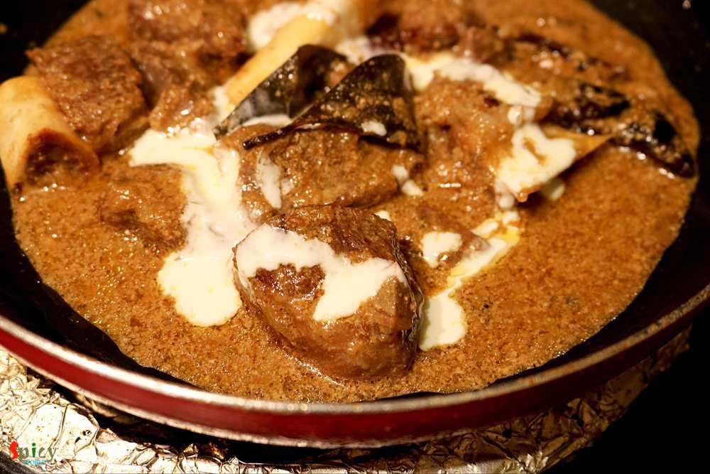
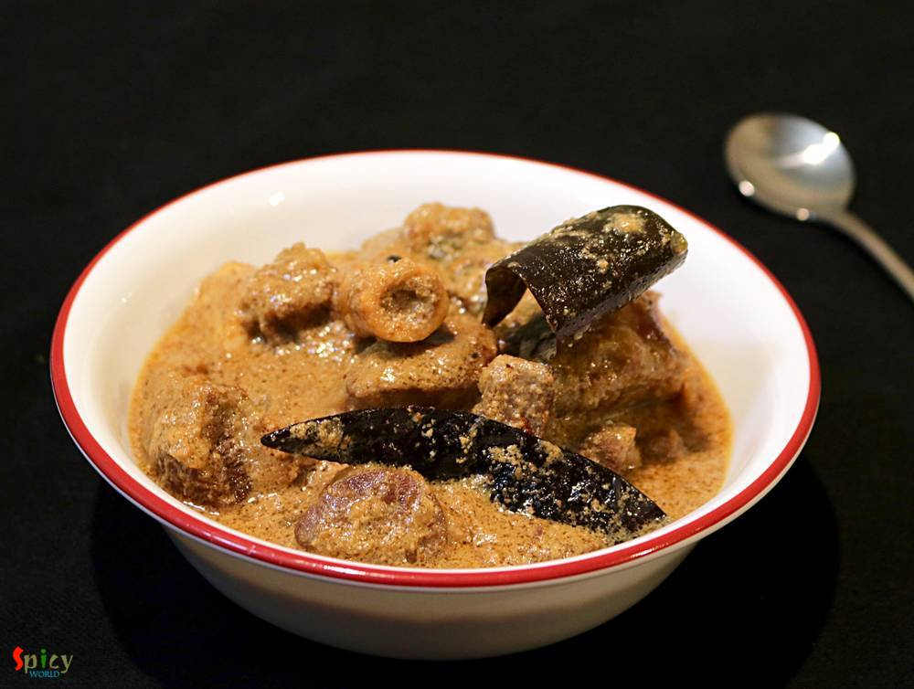

Simple and Easy Recipes
Mutton Rezala
© 2016 Spicy World, Published on: May 16, 2016
This is a very popular dish from Mughlai cuisine in India. In this recipe medium size mutton pieces are cooked in a white, creamy, nut based rich gravy. 'Rezala' goes best with naan, biriyani, roti or paratha. I have already posted several recipe on 'rezala'. The dish has a very unique taste. It is neither very spicy nor very sweet. I made this last week and thoroughly enjoyed it with plain rice. Try this easy recipe in your kitchen and enjoy a lovely dinner with your family.

Ingredients
- 10 - 12 medium size mutton pieces.
- 1 big onion, finely chopped.
- 1 Tablespoon of ginger and garlic paste.
- 3 Tablespoons of curd.
- Whole spices (3 dry red chilies, 1 small cinnamon stick, 4 green cardamom, 4 cloves, pinch of cumin seeds, 5 black peppercorns,m1 bay leaf).
- Salt and sugar.
- 3 Tablespoons of cashew and poppy seeds paste.
- Few drops of rose water / kewra essence.
- 1 Teaspoon of roasted coriander powder.
- 1 Teaspoon of roasted cumin powder.
- 3 Tablespoons of oil.
- 1 Tablespoon of ghee.
- Warm water.
- Half Teaspoon of garam masala powder.
- 2 Tablespoons of heavy cream.


Steps
Marinate the mutton with curd and ginger, garlic paste for 3 hours.
Heat oil and ghee in a pan.
Add all the whole spices into the hot oil. Saute for few seconds.
Now add the chopped onion and fry till becomes translucent.
Then add the marinated mutton with some salt.
Mix and cook in low flame for 15 minutes.
Now add the cashwe and poppy seeds paste with a Teaspoon of sugar.
Mix well and cook for 6 minutes.
Now add roasted cumin and coriander powder. Mix well.

Add some warm water and cook till the meat becomes soft.
Lastly add heavy cream, rose water and garam masala powder. Mix well and turn off the heat.
Mutton should have lot of gravy.
Let it rest for few minutes and then serve.
Your mutton rezala is ready ...
Serve this hot with naan, biriyani or plain rice ...
")